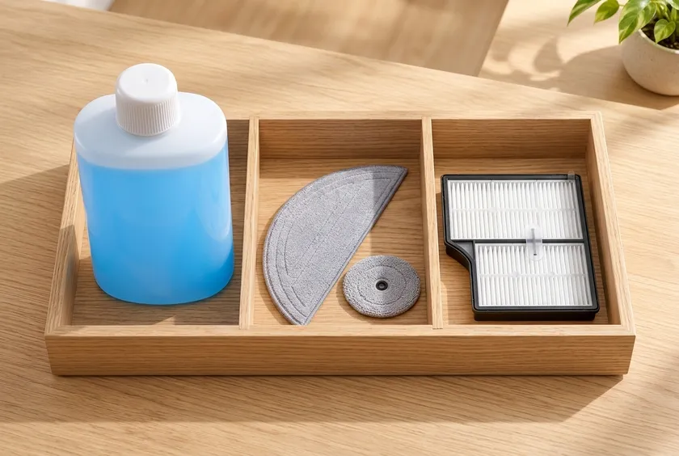
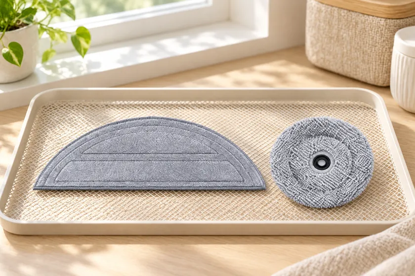

로보락 (Roborock)
로보락 S9 MaxV Ultra 물걸레 패드 교체 전, 정품·호환 세제 옵션 고르는 기준
글·구성: 제이상점 · 기종별 1:1 호환 실물 점검 · 교체 주기 비교표 · 스마트스토어 패키지 안내

핵심 관리 · 선택 체크포인트
- S9 MaxV Ultra 물걸레 패드와 사이드 브러시를 교체할 시기가 다가오면, 소모품 세트를 주문할 때 세제 포함 방식을 어떻게 고를지 함께 고민하게 됩니다.
- S9 MaxV Ultra 세제 구성별 9가지 필수 옵션 비교: S9 MaxV Ultra 소모품은 기간별 수량 구분(1년·6개월·3개월)과 세제 구성 방식 3가지가 결합된 총 9개 필수 옵션으로 나뉘어 있습니다.
- 옵션 이름의 3개월·6개월·1년은 묶음 수량을 구분하기 위한 표기이며, 실제 교체 주기는 집 면적과 물걸레 청소 빈도에 따라 달라집니다.
- 메인 패드와 가장자리 미니 패드는 짝을 맞춰 점검해요: S9 MaxV Ultra는 넓은 반원형 진동 패드와 모서리를 닦는 작은 원형 미니 패드가 함께 움직이므로 두 패드의 벨크로 밀착 상태와 올 눌림을 나란히 살펴보는 것이 좋습니다.
- 전원을 끈 상태에서 물걸레 장착판 이물을 가볍게 닦아 내고 남은 세제 병 수를 세어 보았다면, 로보락 S9 MaxV Ultra 소모품 9종 필수 옵션 상세 화면에서 우리 집에 맞는 구성을 비교해 보세요.
실물 부품 디테일 · 관리 구성 이미지


부품 규격 · 점검 기준표
| 필수 옵션 구분 | 세제 구성 방식 | 어울리는 선택 기준 |
|---|---|---|
| 1년세트 / 6개월세트 / 3개월세트 | 호환 세제 포함 | 소모품 전체와 기본 세제를 한 번에 채워 두고 싶을 때 |
| 1년·6개월·3개월｜호환세제→정품세제 업그레이드 | 로보락 정품 세제로 변경 | 소모품 교체 일정에 맞춰 정품 클리너를 함께 구비할 때 |
| 1년·6개월·3개월｜세제 미포함 | 세제 제외 (부품만 구성) | 도크 옆에 이미 개봉 전이거나 여유 있는 세제가 남아 있을 때 |
💡 교체 주기가 겹치는 필터·브러시·물걸레·더스트백은 단품 배송비를 여러 번 내기보다 로보락 S9 MaxV Ultra 기간별 세트(3개월·6개월·1년)로 미리 구비해 두면 물세척 후 24시간 교대 건조까지 끊김 없이 관리할 수 있습니다.
자주 묻는 질문 (FAQ)
Q. 로보락 S9 MaxV Ultra의 1년세트 / 6개월세트 / 3개월세트 규격과 관리 기준은 무엇인가요?
A. 호환 세제 포함 규격을 사용하며, 소모품 전체와 기본 세제를 한 번에 채워 두고 싶을 때 기준으로 점검·교체하면 청소 효율을 안정적으로 유지할 수 있습니다.
Q. 로보락 S9 MaxV Ultra의 1년·6개월·3개월｜호환세제→정품세제 업그레이드 규격과 관리 기준은 무엇인가요?
A. 로보락 정품 세제로 변경 규격을 사용하며, 소모품 교체 일정에 맞춰 정품 클리너를 함께 구비할 때 기준으로 점검·교체하면 청소 효율을 안정적으로 유지할 수 있습니다.
Q. 로보락 S9 MaxV Ultra의 1년·6개월·3개월｜세제 미포함 규격과 관리 기준은 무엇인가요?
A. 세제 제외 (부품만 구성) 규격을 사용하며, 도크 옆에 이미 개봉 전이거나 여유 있는 세제가 남아 있을 때 기준으로 점검·교체하면 청소 효율을 안정적으로 유지할 수 있습니다.
제이상점 1:1 검수 추천 패키지 · 구매 안내
메인 추천 구성
대표 구성 참고가 69,500원대 (옵션·쿠폰별 스마트스토어 결제 화면 기준)
1년세트1년세트｜호환세제→정품세제 업그레이드6개월세트6개월세트｜호환세제→정품세제 업그레이드3개월세트
☑️ 주문 전 확인해 두면 좋은 제이상점 안심 포인트
· 기종별 1:1 전용 규격 검수: 모델명·연식에 맞는 호환·정품 구성을 검수해 오주문 불안을 줄였습니다.
· 해외직배송 미리 주문 팁: 중국 구매대행·해외직배송 상품이므로 마지막 여분 1개를 꺼내 쓰는 시점에 개인통관고유부호와 함께 여유 있게 주문해 두시면 훨씬 경제적인 비용으로 끊김 없이 교체하실 수 있습니다.
· 기종별 1:1 전용 규격 검수: 모델명·연식에 맞는 호환·정품 구성을 검수해 오주문 불안을 줄였습니다.
· 해외직배송 미리 주문 팁: 중국 구매대행·해외직배송 상품이므로 마지막 여분 1개를 꺼내 쓰는 시점에 개인통관고유부호와 함께 여유 있게 주문해 두시면 훨씬 경제적인 비용으로 끊김 없이 교체하실 수 있습니다.
📖 더 많은 가정 내 사용 스토리와 상세 후기가 궁금하시다면
📱 네이버 블로그 모바일 원문 보기 ↗